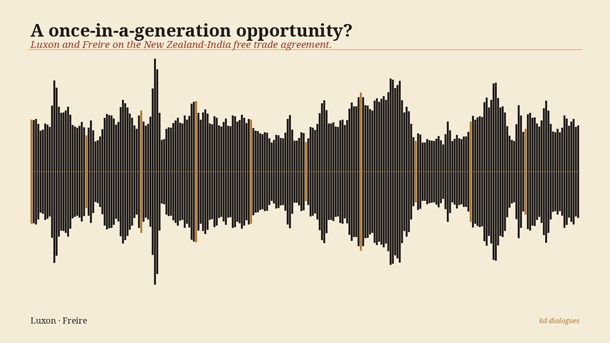

<!-- kd-dialogues audio embed :: india-fta -->
<!-- Replace the src below with a public URL to the mp3, e.g. a GitHub raw URL. -->
<figure style="max-width:640px;margin:1.4rem auto;font-family:'Noto Serif',Georgia,serif;color:#1c1816">
  
  <audio controls preload="metadata" style="width:100%;margin-top:8px">
    <source src="{MP3_URL}" type="audio/mpeg">
    Your browser cannot play this audio. <a href="{MP3_URL}">Download the mp3</a>.
  </audio>
  <figcaption style="font-style:italic;text-align:center;color:#4a4238;margin-top:6px">
    A once-in-a-generation opportunity? — Luxon and Freire on the New Zealand-India free trade agreement.
  </figcaption>
  <details style="margin-top:10px;font-size:0.9rem"><summary style="cursor:pointer;color:#963c28">Sources &amp; further reading</summary><ul style="margin:6px 0 0 1.2rem;padding:0"><li><a href="https://www.mfat.govt.nz/en/trade/free-trade-agreements/india">MFAT — New Zealand–India Comprehensive Economic Partnership Agreement</a> — <span style="color:#4a4238">signed 27 April 2026, New Delhi</span></li><li><a href="https://bills.parliament.nz">NZ Parliament — first reading Hansard</a> — <span style="color:#4a4238">25 June 2026, 93 to 29</span></li><li>Paulo Freire, Pedagogy of the Oppressed (1968) — <span style="color:#4a4238">chapters 2 and 3 — banking vs. dialogical education</span></li><li><a href="https://www.kiwidialectic.com/">The Kiwi Dialectic</a> — <span style="color:#4a4238">full course notes and further reading</span></li></ul></details>
</figure>
